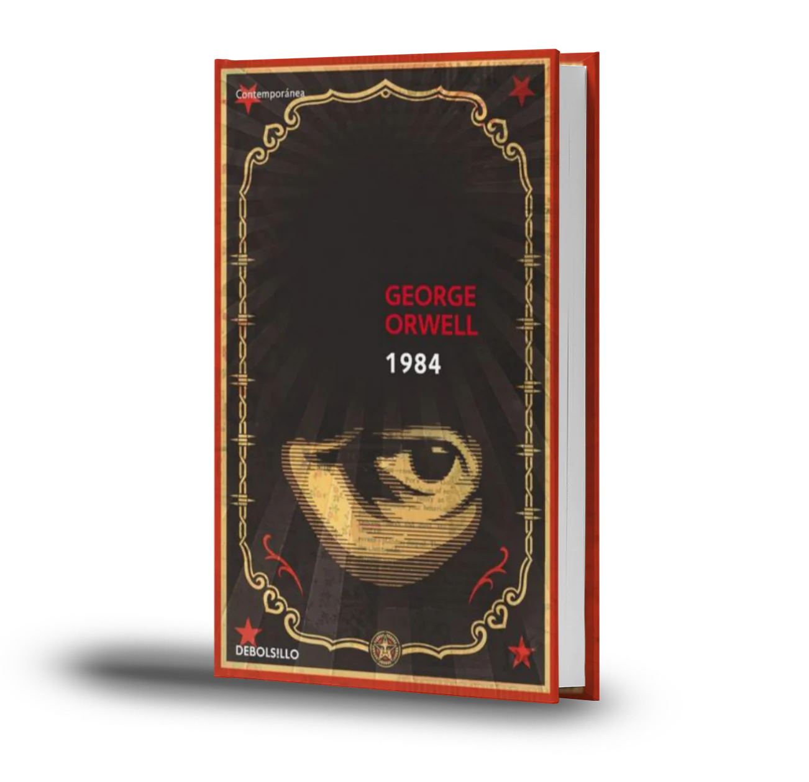

Cien años de soledad
Autor: Gabriel García Márquez
Editorial: Sudamericana
Año de publicacion: Mayo de 1967
Descripción: Esta novela cuenta la historia de la familia Buendía a lo largo de varias generaciones en el ficticio pueblo de Macondo.Combina elementos de realismo mágico con una rica exploración de temas como el amor, la soledad y la decadencia.

Este libro es complejo de entenderlo a la primera lectura, se requieren dos o tres veces para lograr captar el hilo de esta literatura. Sus personajes hacen de este libro más interesante y lo similar de sus nombres lo hacen confuso al mismo tiempo, es sin duda un libro que te desafía a pensar, expandir tu mente y reta a tu memoria. "Antoprocel26 06/October/2017"https://es.babelio.com/livres/Gabriel-Garcia-Mrquez-Cien-anos-de-soledad/6/critiques
1984
Autor: George Orwell
Editorial: Secker & Warburg
Año de publicacion: 8 de junio de 1949
Descripcion: En un mundo distópico (Sociedad imaginaria bajo un poder totalitario o una ideología determinada, según la concepción de un autor determinado, que sería lo opuesto a la utopía.), el protagonista lucha contra un gobierno totalitario que controla cada aspecto de la vida de las personas. La novela explora temas de manipulación, vigilancia y el abuso de poder.
Frase emblematica de George Orwell: Tenía usted que vivir —y en esto el hábito se convertía en un instinto— con la seguridad de que cualquier sonido emitido por usted sería registrado y escuchado por alguien y que, excepto en la oscuridad, todos sus movimientos serían observados.https://blogs.uoc.edu/humanitats/es/frases-george-orwell-1984-vigilancia-control-social-covid19/
Orgullo y prejuicio
Autor: Jane Austen
Editorial: Porrúa S.A. de C.V
Año de publicacion: 28 de enero de 1813
Descripcion: La historia sigue las complejidades del romance entre Elizabeth Bennet y el adinerado pero arrogante Sr. Darcy. La novela critica las normas sociales de la época y examina temas de amor, clase y prejuicio.

Frase emblematica del libro: Las personas cambian tanto que siempre hay algo nuevo que descubrir en ellas.
https://www.frasesypensamientos.com.ar/frases/orgullo-y-prejuicio-1813.html#frases